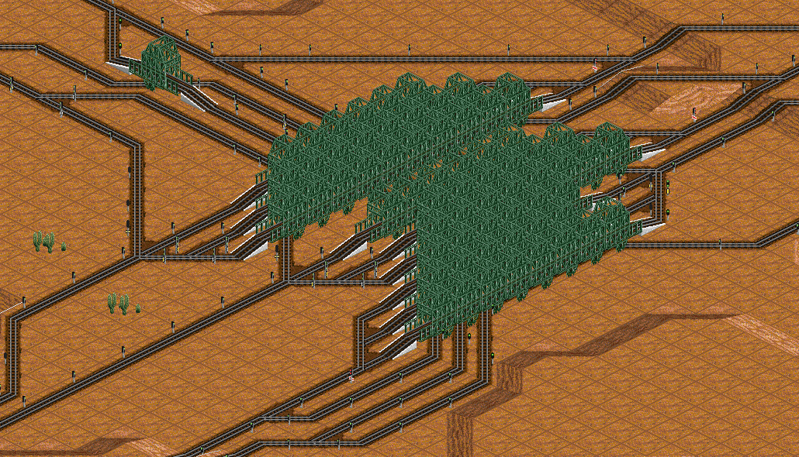
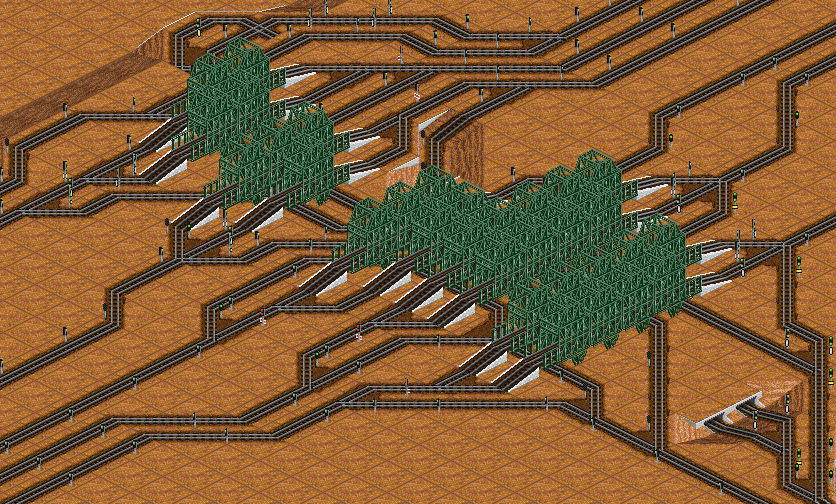

Advanced Building Revue 10: Invisible Hubs
This time I am going to show a technique of building hubs called “Invisible Hubs”. Their name comes from the fact that one part of the hub is basically all hidden under bridges or in tunnels. An introduction to yet another interesting technique how to build hubs, particularly regarding SLHs. You might have already noticed one such hub as SLH03 in psg204. Due to various reasons, those hubs are rather situational because of dependencies not only on space and composition, but also high dependence on trains. Read further for details…


Introduction
The defining aspect of this hub is making one part pretty much invisible. To reach this effect, we basically tunnel the whole hub through from one end to another. This creates space atop of the tunnels, allowing to build other connections there. The common advantage is making the hub short as it has just split, tunnel, and minimal merge that is majorly “hidden” on the tunnels.
Note: the article mentions bridges and tunnels. It is meant to be the long split part unless stated otherwise. That part can be made by both bridges or tunnels of course.
How does it look:

Underground part
- The part with tunnels is very simple, there is just:
- 1. split
- 2. tunnels
- 3. merge
Due to having tunnels, we can just space them out and make the split lines there.
Because we expect the tunnels to be long, triple tunnels are very likely. (depends on TL)
The tunnels just end. That is all that makes the merger. We also assign the priority role to the tunnels.
Surface part
- This is where we are having some real stuffing going on. We need to place basically all of the hub center and two mergers here:
- 1. left hand traffic
- 2. merges
- 3. outside of the hub
Because trains first split and then merge, it will create some left hand driving. Because we want to save space atop of the tunnels, it is wise to cross the lines later on…
This is the most pain of this hub. We need to make trains divide into the tunneled lines in minimal space.
The third merger will of course be outside the hub, where it can feel quite comfortable because there is sufficient amount of space.
Situational
There are some aspects that affect the effectiveness of this technique dramatically. The main factor are trains. Not just simply said “TL5 or greater will do best with these hubs” – the key thing is ratio of curve length: train acceleration.
Curve : Acceleration Ratio
Because priorities have to be quite long due to the tunnels, it tends to be more effective with rather badly accelerating trains. On the other hand, the shorter curve lengths, the shorter the tunnels. So ideal cases would be for example TL2 monorail – accelerating badly, but having short curves and waiting bays. Or just like in psg206, TL6 CL2 with great acceleration but due to being long these trains still need a long priority compared to their curve length. Another example could be TL5 2x Lev3 maglev – those have quite a long curve length already, but accelerate so badly that the prio is fine.
Train length effect:
As a matter of fact, shorter trains require more tunnels in general. Therefore we could easily get 4 tunnels for TL2 which is quite high. This unfortunately not only increases the size of the hub, but also drastically increases the priority size.
- Advantages:
- + very short hub
- + super small SLH to build
- + well readable as one part is invisible (if using tunnels)
- + hidden hub (if using bridges)
- + positive WTF and Sparta values
- Disadvantages:
- – strongly dependant on trains
- – unfriendly with larger line counts
- – BBH merger atop of the tunnels can be a pain
- – not very expandable
- – fixed minimal prio size
Other thoughts
Too long bridges? Why don’t I just cut them in half!
When the bridges just exceed some limited length we have to solve it either by adding another bridge or cut them in half to make them shorter. Adding another bridge is probably the simplest option. Another way could be making there a “cut section” which would be tunnelled by the other hub parts.
Bridges or Tunnels?
As always, bridges allow for much more flexible placement. This can get tremendously helpful in this kind of hubs, so bridges can become preferred easily. On the other hand tunnels make it look clean ;). It also depends on the landscape of course…
How do I know if it is the right time for this hub?
Choosing the right time and place when to build this junction is also very key. It is quite hard to say universally when to build it, so the only way to discover is just to try probably.
Alright, where do I start building?
When I was building those hubs I usually found it rather confusing to start. One of the main problems lies within quite unknown amount of bridges required. If you build half of the junction and suddenly discover that your double bridges need tripling, some F-word storm might get heard.
I tried to build them from the outside part (the opposite of where the actual SL is heading) because that makes the left-hand traffic inside and you just add up the other pieces onto it from the outside. The sequence probably doesn’t matter as you will likely need to move many things around until reaching satisfactory results.
Examples
Pictures! Here goes one TL5 SLH.  
And here we have a TL2 version of a SLH. (some bridges might be too long)


Conclusion
The invisible hubs are certainly helpful when it comes to making short hubs and saving ML space but at the same time they definitely aren’t the ultimate solution. Their main downside is the very specific usability and their usually hard expanding. Over all, it definitely is a nice addition to our games and I believe it will earn it’s place. 🙂 Now thank you for reading and let’s go build some!
Categories: Community News